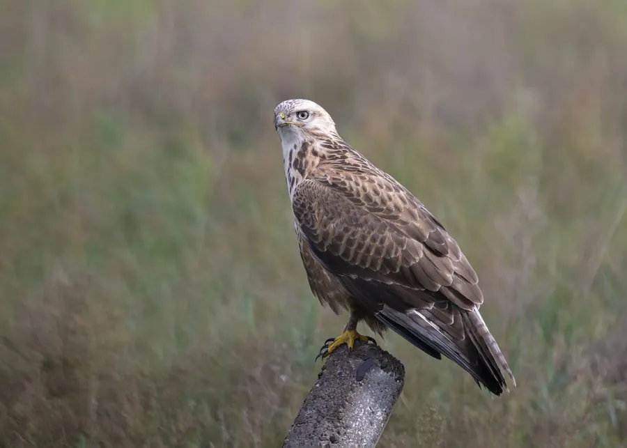

鸟类 · 动物界
大鵟 Buteo hemilasius

青藏高原和蒙古高原常见的大型猛禽，羽色有深色和浅色两种类型，常在空中悬停或静立在土堆上等待鼠兔。
- 分类
- 门脊索动物门纲鸟纲目鹰形目科鹰科属鵟属
- 栖息环境
- 高原草甸、荒漠草原、山地草原和农田，多在开阔地带活动
- 地理分布
- 中亚、蒙古、青藏高原和中国北方，冬季南迁至中国南方与南亚
- 保护级别
- IUCN 无危（LC）；中国国家二级保护动物
物种志
大鵟体长 57–67 cm，体重约 1–2 kg，翼展 143–175 cm，是体形较大的鵟类。它的羽色变化很大，有深褐色和浅色两种类型：浅色个体头颈和腹部偏白，深色个体通体深褐；翅膀宽大，翼端有深色斑，尾羽常带横斑。它站立时显得粗壮，喙钩曲，眼睛黄色。
大鵟繁殖于中亚、蒙古、青藏高原和中国北方的山地草原，冬季南迁到中国南方和南亚。它们喜欢开阔的高原草甸、荒漠草原和农田，常静立在土堆、电线杆上等待猎物，也会在空中悬停观察地面。大鵟主要捕食鼠兔、田鼠等小型哺乳动物，也吃鸟类和昆虫，是控制鼠害的重要天敌。繁殖期在悬崖或高树上营巢，每窝产卵 2–4 枚，孵化约 30 天。目前被列为无危物种，中国将其列为国家二级保护动物。
形态与习性
- 食性鼠兔、田鼠等小型哺乳动物，也吃鸟类和昆虫
- 体长57–67 cm
- 体重约 1–2 kg
- 翼展143–175 cm
- 繁殖每窝 2–4 枚卵，孵化约 30 天
- 寿命野外约 15–20 年
- 羽色有深褐色和浅色两种羽色类型
趣味知识
- 大鵟有深色和浅色两种羽色类型，同一片草原上常能同时见到。
- 它们会像红隼一样在空中悬停，观察地面上的鼠兔和田鼠。
- 大鵟是控制高原鼠害的重要天敌，对维持草场生态平衡很有价值。
- 大鵟常借电线杆和土堆作观察点，发现猎物后迅速俯冲。